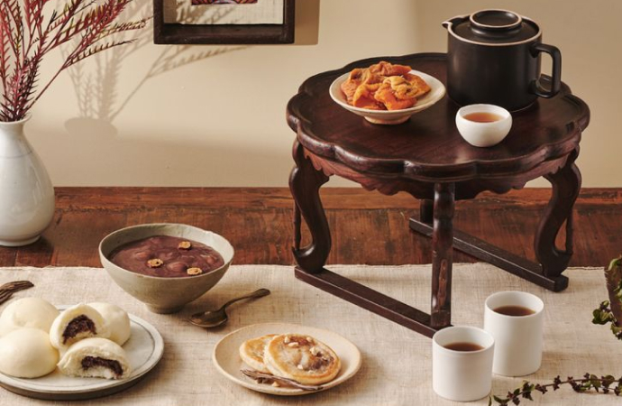
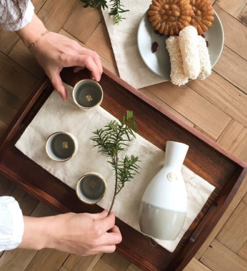
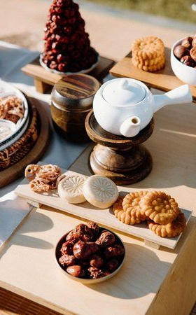

자격과정
자격과정
home > 자격과정 > 유아다례지도사
유아다례지도사
Children Tea-Time Education
유아다례지도사 양성과정
바른 습관은 훌륭한 인성을 만들고 품격 있는 생활태도가 아이의 미래를 형성합니다.
호기심 많은 영ㆍ유아의 다례교육은 좋은 습관을 길러 내고 바른 심성과 올바른 인격을 키우는 밑거름이 됩니다.
본 교육과정은 영ㆍ유아 어린이의 정서교육과 인성교육에 좋은 영향을 주는 차(茶)생활 예절을 체계적으로 교육 지도를 할 수 있는 유아다례 전문강사 교육 과정입니다.



연수 교육과정 안내
| 구분 | 내용 | 비고 |
|---|---|---|
| 교육일정 |
|
|
| 교육내용 |
|
|
| 지도교수 |
|
|
| 교육대상 |
|
|
| 교육정원 |
|
|
| 교육비 |
|
|
| 특전 |
|